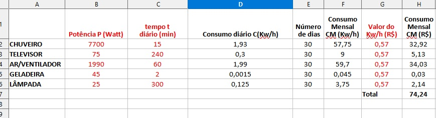

Trabalho Multidisciplinar
Neste site vai mostar o trabalho
Tabela
Texte descrevendo a tabela
De acordo com o quadro acima, pode ser analisada a média do consumo mensal de uma pessoa. Os dados são tirados de um cálculo e podem variar. O item chuveiro tem a potência de 7700w e ao ser usado por 15mim consume 57,75 kw/h, o que equivale a R$ 32,92. Já o item televisor, que tem a potência de 75w usado por 4 horas, gasta em média 9kw/h que fica entorno de R$5,13. Enquanto a lâmpada de potência 25w, com o uso de 5h tende consumir 3,75kw/h ou R$ 2,14. Por fim, o ar condicionado com potência de 1990w, usado por 1h, fica com o consumo de 59,7kw/h e de R$34,03
Desenho da casa